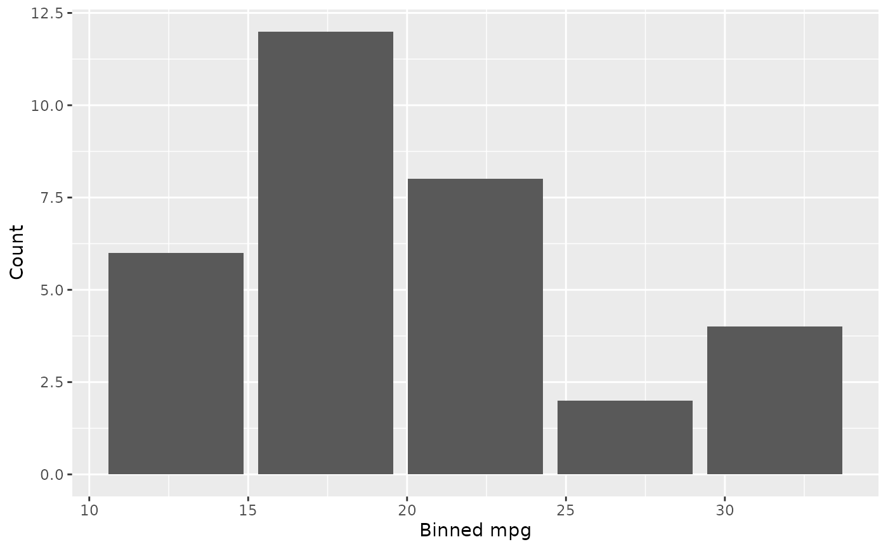
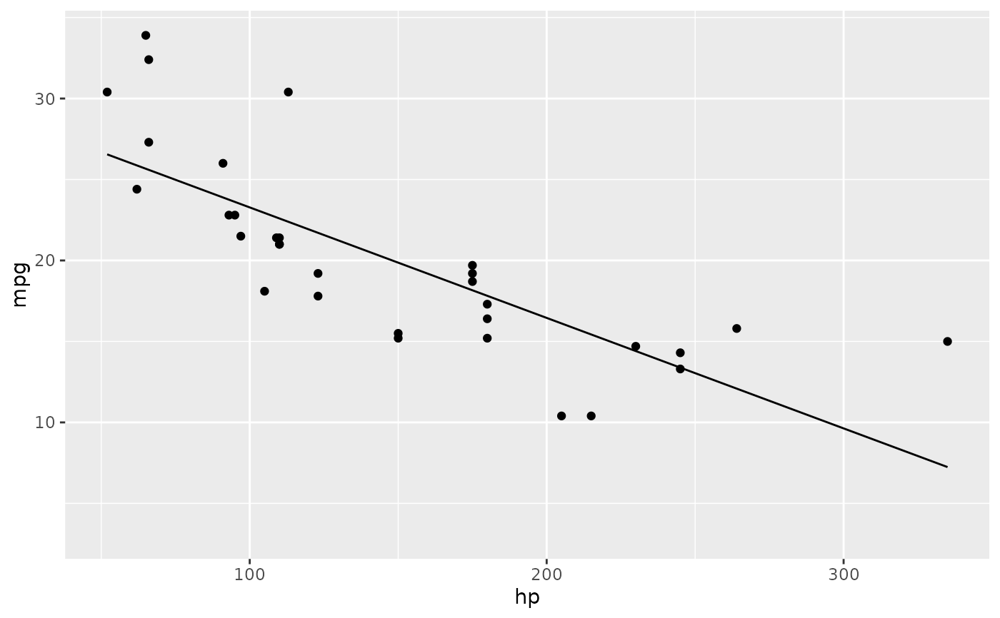

dbGetPlot takes a DuckDB connection and a SGL statement
and returns the plot defined by the SGL statement.
Arguments
- con
A DuckDB connection created with
DBI::dbConnect()- sgl_stmt
A SGL statement string that defines the plot
Details
The SGL statement is parsed into an internal graphics structure, the referenced data is queried from DuckDB, semantic validation is performed, any column-level transformations and aggregations are applied, and the result is converted to a ggplot2 plot object.
SGL statements support the following clauses: visualize (aesthetic
mappings), from (data source or SQL subquery), using (geom type),
group by, collect by, scale by, facet by, title, and the
layer operator for combining multiple layers.
See also
vignette("sgl-language-guide") for the full SGL syntax reference.
Examples
library(duckdb)
#> Loading required package: DBI
con <- dbConnect(duckdb())
dbWriteTable(con, "cars", mtcars)
# Scatterplot
dbGetPlot(con, "
visualize
hp as x,
mpg as y
from cars
using points
")
 # Histogram
dbGetPlot(con, "
visualize
bin(mpg) as x,
count(*) as y
from cars
group by
bin(mpg)
using bars
")
# Histogram
dbGetPlot(con, "
visualize
bin(mpg) as x,
count(*) as y
from cars
group by
bin(mpg)
using bars
")

# Scatterplot with regression line overlay
dbGetPlot(con, "
visualize
hp as x,
mpg as y
from cars
using (
points
layer
regression line
)
")
